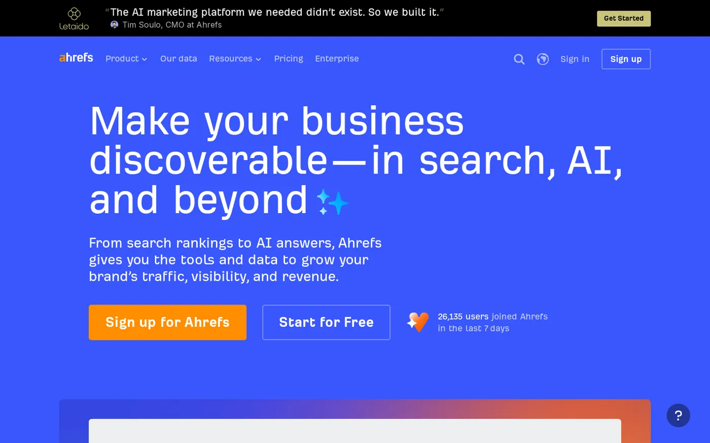
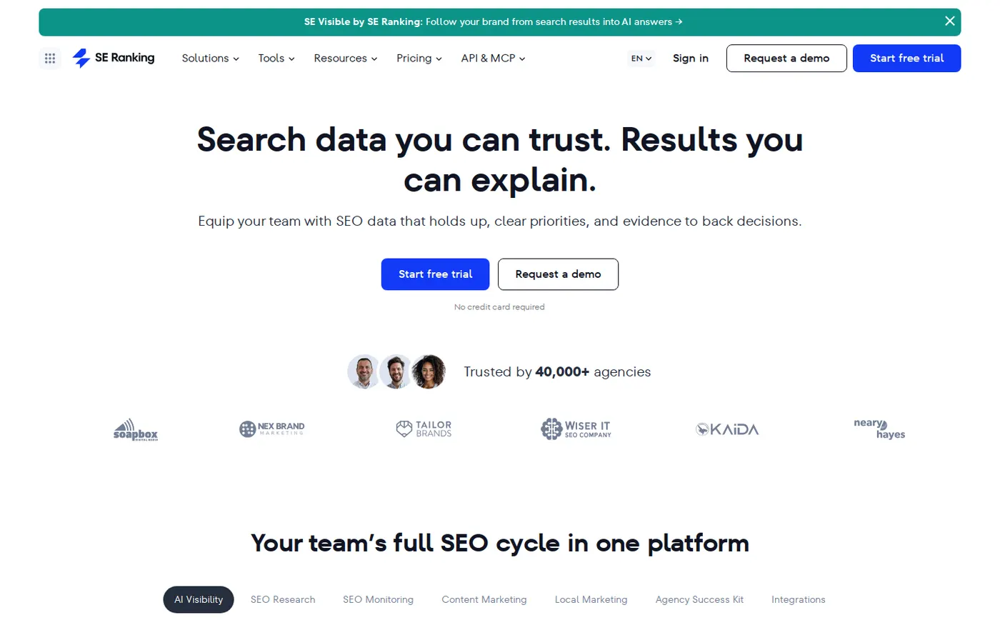
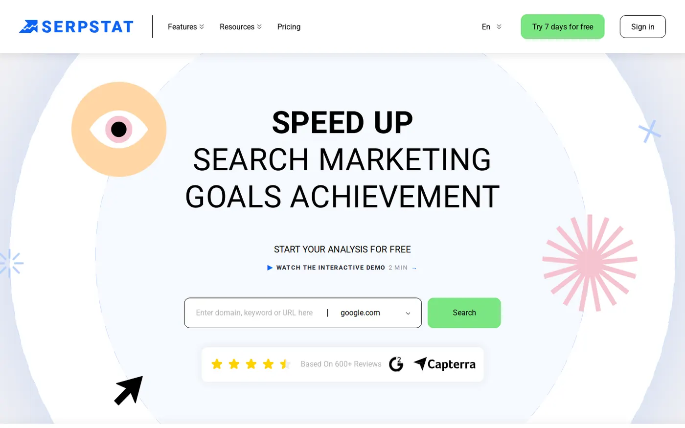
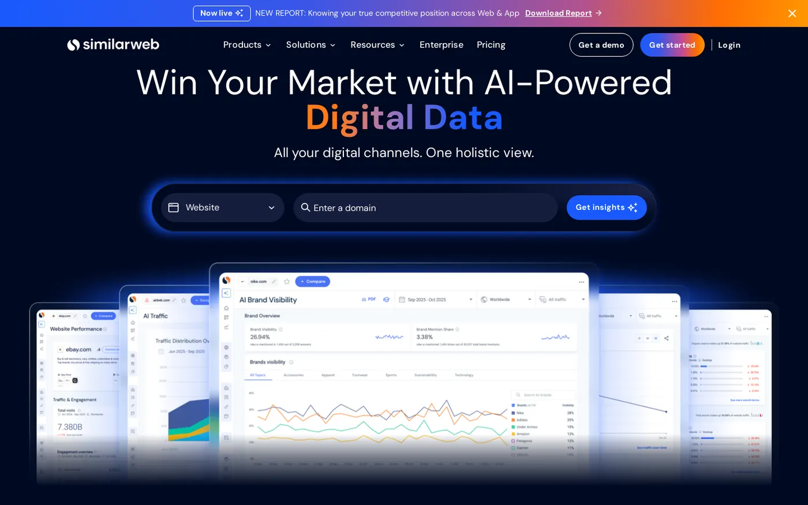
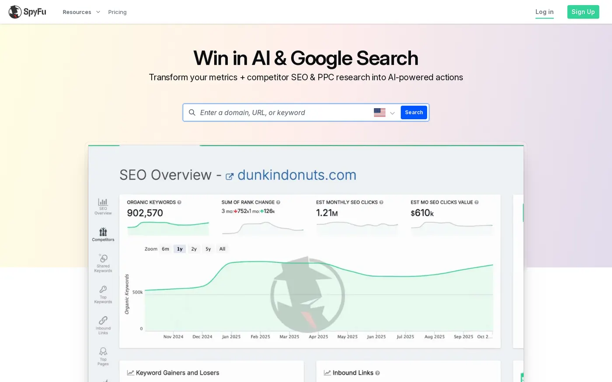
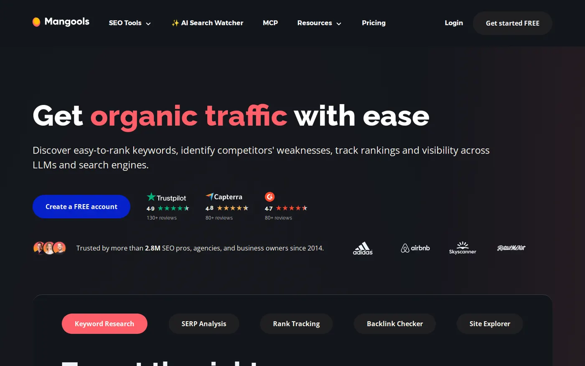
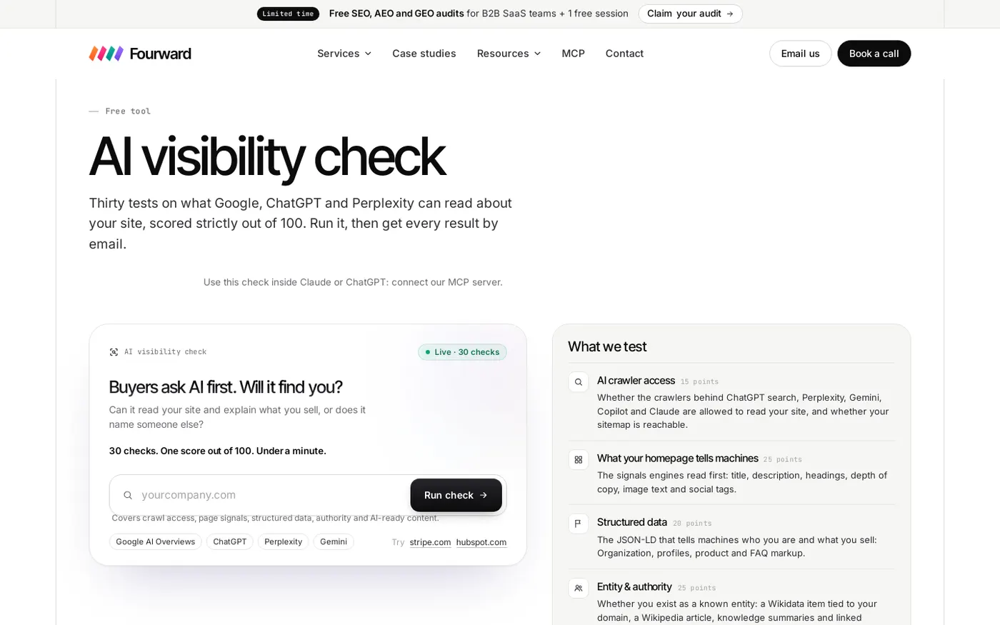

On this page
The best Semrush alternatives for most SaaS teams are Ahrefs for a like-for-like swap, SE Ranking for a lower price and Serpstat for AI tracking inside the plan. Semrush's SEO plan costs $117.33 a month billed annually, and its Starter plan, which includes 50 AI prompts tracked daily, costs $165.17. The right swap depends on which part of Semrush your team actually uses.
I compared six paid tools and our own free check on three things: price, data depth and AI search tracking. Every fact comes from each company's own pricing and product pages, checked on 10 November 2026.
I work at Fourward, which publishes this guide. One entry is ours: the free AI visibility check, listed last. I also use Ahrefs in my work. Every other fact links to that company's own website, checked on 10 November 2026. No vendor paid to be included.
- A Semrush alternative is an SEO tool that replaces some or all of Semrush's keyword, backlink, rank tracking and AI search data, often at a lower price.
- Published entry prices run from $29 a month (SpyFu) to $129 (Ahrefs Lite). Mangools and Ahrefs also have free options.
- AI search tracking usually sits in a higher plan or costs extra. Serpstat includes it on Team at $100 a month, Semrush's Starter costs $165.17 and Ahrefs Brand Radar starts at $199.
- A tool shows whether AI names you. It doesn't make AI name you. That takes crawler access, clear pages and mentions on other sites, as our guide to GEO (generative engine optimization) for B2B SaaS explains.
What Semrush costs, and why teams look elsewhere
Semrush is an SEO suite: keyword research, backlink data, rank tracking, site audits and, now, AI search tracking. Its pricing page sells AI visibility and SEO in one platform. AI search tracking means a tool asks AI engines your buyers' questions on a schedule and records whether your brand appears.
- SEO$117.33 a month, billed annually.
- Starter$165.17 a month, billed annually, with 50 prompts tracked daily across Google Search, ChatGPT, Perplexity and Gemini.
- Pro+$248.17 a month, billed annually.
- FreeA free plan at $0 a month.
Teams usually look elsewhere for one of three reasons. Some teams pay for more of the suite than they use. Others want AI tracking without moving up a plan. Others need a kind of data Semrush isn't built around, such as website traffic or competitors' ads.
Write down the three Semrush reports your team opens every week. Pick the alternative that does those three well, not the one with the longest feature list.
How I picked and compared them
I started from SEO suites that SaaS teams often weigh against Semrush, then kept the ones whose own sites I could read today. For each one I checked three things on its own site:
- PriceThe cheapest paid plan and how it is billed.
- Data depthHow much keyword, backlink, traffic or AI answer data that plan gives you, such as tracked keywords or AI checks.
- AI search trackingWhether the tool tracks AI answers, which engines it covers and what it costs.
Moz Pro is a common pick, but its site blocked my checks, so I left it out rather than guess. I didn't create accounts or run paid tests, so nothing here claims hands-on results. Where a page showed no price in the text I could read, I say so. The order runs from the closest match to Semrush to the narrowest tools, with our free check last.
Semrush alternatives at a glance
The same five questions for every tool. Scroll the table sideways on a phone.
| Tool | Best for | Starts at | AI search tracking | Free option |
|---|---|---|---|---|
| Ahrefs | A like-for-like Semrush swap | $129/mo (Lite) | Brand Radar, from $199/mo | Ahrefs Free plan |
| SE Ranking | A full suite for less | $103.20/mo billed annually (Core) | Add-on from $71/mo | 14-day trial |
| Serpstat | AI tracking inside the SEO plan | $50/mo (Individual) | 1,500 checks/mo on Team ($100/mo) | Not confirmed |
| Similarweb | Traffic and market data | No price shown | AI Brand Visibility, no price shown | Free trial |
| SpyFu | Competitor and ads research | $29/mo | Not confirmed | Not confirmed |
| Mangools | A free start with simple tools | Free account | AI Search Watcher | Free account, AI Search grader |
| Fourward AI visibility check | Finding why AI skips you | Free | Checks what AI engines can read | Yes |
1. Ahrefs
Best for Teams that want a full SEO suite like Semrush, with a separate product for AI visibility.

Ahrefs is the closest like-for-like swap for Semrush: keyword research, backlink data, rank tracking and site audits in one suite. For AI search it sells Brand Radar, which Ahrefs describes as a way to study your brand's AI visibility.
- PricingLite is listed at $129 a month and Standard at $249. Pricing page
- AI search trackingBrand Radar, listed separately from the main plans, from $199 a month.
- Data depthKeywords, backlinks and audits in the main suite. AI visibility data in Brand Radar.
- Free optionAhrefs Free, for data on your own site, plus a free AI visibility checker.
My take I use Ahrefs in my work, so weigh my view with that in mind. Moving to Ahrefs changes your team's routine the least, because the suite covers the same jobs. Budget for Brand Radar if AI tracking matters, because its price is listed apart from Lite.
2. SE Ranking
Best for Teams that want most of Semrush's scope for less, with AI tracking only if they need it.

SE Ranking is an SEO suite for rank tracking, keyword research and site audits. Its pricing page sells AI visibility as an add-on, so you pay for AI tracking only when you switch it on.
- PricingCore is $103.20 a month on annual billing. Pricing page
- AI search trackingAn AI visibility add-on from $71 a month. The add-on covers AI Overviews, AI Mode, Gemini, ChatGPT, Copilot and more.
- Data depthCore tracks 2,000 keywords daily.
- Free optionA 14-day free trial.
AI Overviews are the AI summaries Google shows above its results. AI Mode is Google's chat-style search.
My take SE Ranking Core costs less than Semrush's SEO plan on yearly billing: $103.20 against $117.33. Add the Core and add-on prices together before you compare it with Semrush's Starter, which bundles AI tracking.
3. Serpstat
Best for Small teams that want AI tracking included in the SEO plan, not bought separately.

Serpstat is an SEO platform for keyword research, rank tracking and audits. Its AI Visibility feature shows how AI describes your brand. The pricing page ties those AI checks to the Team and Agency plans.
- PricingIndividual is $50 a month and Team is $100 a month. Pricing page
- AI search tracking1,500 AI checks a month on Team and 3,000 on Agency. You choose the models, such as ChatGPT, Grok and Gemini.
- Data depthAI tracking is counted in checks, not prompts. Ask how many checks one prompt uses on each model.
- Free optionNot confirmed on the pages I read.
My take Serpstat is the cheapest way I could confirm to get SEO data and AI tracking on one bill. Confirm the Team price and the check allowance at checkout before you commit.
Free check. 30 checks, one score out of 100, under a minute.
4. Similarweb
Best for Teams that need traffic and market data beyond search, and can work with a sales-led price.

Similarweb sells web intelligence: data on websites, traffic and markets, not only search rankings. Its pricing page lists a Strategic SEO Suite and, in its Gen AI Intel Suite, a product called AI Brand Visibility.
- PricingNo price is shown for the Strategic SEO Suite. Pricing page
- AI search trackingAI Brand Visibility, part of the Gen AI Intel Suite, with no price shown.
- Data depthWebsite and market data next to SEO data, sold as separate suites.
- Free optionSimilarweb says you can start a free trial or try one of its self-service packages.
My take Similarweb is the pick when your questions are about market share, not just rankings. Ask which AI engines AI Brand Visibility covers before you sign, because the pricing page doesn't list them.
5. SpyFu
Best for Small teams that mostly research competitors' keywords and Google Ads.

SpyFu focuses on competitor keyword research for Google Ads and SEO. Google Ads are PPC (pay-per-click) ads, where you pay each time someone clicks. SpyFu has the lowest paid starting price in this list.
- PricingSpyFu's pricing page says plans start at $29 a month.
- AI search trackingSpyFu publishes a guide to monitoring brand mentions in ChatGPT. I couldn't open the pricing page today to confirm which plan includes AI tracking.
- Data depthCompetitors' keywords and ads in Google search.
- Free optionNot confirmed on the pages I read.
My take SpyFu is a low-cost pick for paid search and competitor research, not a full Semrush replacement. Confirm the billing terms and AI features before you buy.
6. Mangools
Best for Solo marketers and small teams that want simple tools and a free start.

Mangools sells a small set of SEO tools and a separate AI Search Watcher. Mangools calls AI Search Watcher an affordable LLM (large language model) rank tracker. Large language models are the systems behind tools like ChatGPT and Gemini.
- PricingA free account to start. Paid prices didn't show in the page text I could read. Pricing page
- AI search trackingAI Search Watcher, listed for AI search monitoring.
- Data depthPlan limits weren't readable today. Mangools' help centre compares what each plan includes.
- Free optionA free account and a free AI Search grader.
My take Mangools is the gentlest start in this list, with an AI tracker from the same company. The Mangools suite is lighter than Semrush, so it suits a small site better than a team publishing every week.
7. Fourward AI visibility check
Best for SaaS teams that want to know whether AI engines can read their site before paying for AI tracking.

Every AI tracker above tells you whether ChatGPT or Google's AI answers name you. I built this free check to show what AI engines can read about your site in the first place.
- PricingFree.
- AI search trackingNone. The check looks at what AI engines can read and doesn't track prompts over time.
- Data depth30 checks on what AI engines can read about a site.
- Related free toolsOur AI crawler checker tests 20 AI crawlers, your robots.txt file and your firewall. Robots.txt is the file that tells crawlers what they may read.
The check doesn't do keyword or backlink research, so it won't replace any tool above. Our free MCP server runs both checks from Claude, ChatGPT, Cursor or VS Code. MCP (Model Context Protocol) is a standard way for AI assistants to use outside tools.
My take Run the free check before you pay for AI tracking in any suite. If AI crawlers can't reach your pages, every tracker will show the same gap. Run the free check.
What Semrush alternatives cost
The cheapest plan, the cheapest AI tracking I found and the question to ask before you pay. Prices are monthly in US dollars, as published on 10 November 2026.
| Tool | Entry plan | AI search tracking | Ask before you buy |
|---|---|---|---|
| Semrush (for reference) | SEO, $117.33, billed annually | Starter, $165.17, billed annually: 50 prompts daily | The monthly-billed price |
| Ahrefs | Lite, $129 | Brand Radar, from $199 | Which AI engines Brand Radar covers |
| SE Ranking | Core, $103.20, billed annually | Add-on, from $71 | How many prompts the add-on includes |
| Serpstat | Individual, $50 | Team, $100: 1,500 checks | How many checks one prompt uses |
| Similarweb | No price shown | AI Brand Visibility, no price shown | The price and the engines covered |
| SpyFu | From $29 | Not confirmed | Which plan includes AI tracking |
| Mangools | Free account | AI Search Watcher | The paid prices and limits |
The headline price isn't always the real price. Semrush and SE Ranking show yearly-billing prices, so check the month-to-month price if you won't commit for a year. Ahrefs and SE Ranking price AI tracking apart from the main plan, so add both numbers.
Compare the plan you would really buy, with AI tracking included, on the same billing cycle. On that basis, Serpstat Team at $100 a month is the lowest price I could confirm for SEO data plus AI tracking.
Which Semrush alternatives track AI search
Five of the six paid tools sell some form of AI search tracking. They differ on four things you should check side by side:
- EnginesSE Ranking lists AI Overviews, AI Mode, Gemini, ChatGPT and Copilot. Serpstat lists ChatGPT, Grok and Gemini. Semrush's Starter lists Google Search, ChatGPT, Perplexity and Gemini.
- UnitSemrush counts prompts, the questions a buyer types into an AI tool. Serpstat counts checks. Compare like with like before you compare prices.
- How oftenSemrush tracks its 50 Starter prompts daily. Ask every other vendor how often answers refresh.
- Where it livesInside the plan (Serpstat, Semrush Starter), as an add-on (SE Ranking) or as a separate product (Ahrefs Brand Radar, Similarweb, Mangools).
If AI answers matter more to you than keyword data, a dedicated tracker may suit you better than any SEO suite. Our guide to the best AI visibility tools compares 11 of them on engines, prompts and price.
How to choose a Semrush alternative
Start from the job you need done, then check the price on the plan that does it.
| Your situation | Start with | Why |
|---|---|---|
| You want everything Semrush does, in another suite | Ahrefs | Full suite, with Brand Radar for AI visibility |
| You want a full suite on a tighter budget | SE Ranking | Core from $103.20 billed annually, AI as an add-on |
| You want AI tracking without a second bill | Serpstat Team | 1,500 AI checks a month at $100 |
| You need traffic and market share data | Similarweb | Web intelligence plus AI Brand Visibility |
| You mostly research competitors' ads and keywords | SpyFu | Built for Google Ads and SEO research, from $29 |
| You want to start free | Mangools or Ahrefs Free | Free account, free AI Search grader |
| You don't know whether AI can read your site | Fourward AI visibility check | Free, 30 checks on what AI engines can read |
Mistakes to avoid when you switch from Semrush
Most switching problems come from comparing the wrong numbers or moving too fast.
- Comparing yearly and monthly prices. Semrush's $117.33 and SE Ranking's $103.20 are yearly-billing prices. Put every tool on the same billing cycle first.
- Assuming AI tracking is included. In this list it is often a higher plan, an add-on or a separate product.
- Treating prompts and checks as the same thing. Ask each vendor how many answers one prompt uses up.
- Cancelling before you export. Save your rank history, keyword lists and reports from Semrush before you cancel, because a new tool starts tracking from day one.
- Buying data nobody acts on. A cheaper tool with an owner beats a full suite nobody opens. Our guide to SEO for B2B SaaS covers what to do with the data. If you build links, our SaaS link building guide shows where backlink data helps most.
Run both tools side by side for one month before you cancel Semrush. Check that the new tool shows the same keywords and competitors you rely on.
A full SEO, AEO and GEO audit, plus 30 minutes with our team to walk you through it.
FAQs
What is the best Semrush alternative?
For a like-for-like swap, Ahrefs is the closest full SEO suite. SE Ranking costs less for a similar scope, and Serpstat includes AI tracking on its Team plan.
What is the cheapest Semrush alternative?
SpyFu's pricing page says plans start at $29 a month, and Serpstat Individual is $50 a month. Mangools and Ahrefs also offer free options.
Is there a free alternative to Semrush?
Ahrefs Free gives you data on your own site, and Mangools offers a free account and a free AI Search grader. Semrush itself also lists a free plan at $0 a month.
Is Ahrefs better than Semrush?
Neither is better for every team. Ahrefs Lite is listed at $129 a month, against $117.33 for Semrush's SEO plan billed annually. For AI tracking, Ahrefs Brand Radar starts at $199 and Semrush's Starter costs $165.17.
Which Semrush alternatives track ChatGPT and Google's AI answers?
SE Ranking's add-on covers AI Overviews, AI Mode, ChatGPT and more, and Serpstat's AI Visibility covers ChatGPT, Grok and Gemini. Ahrefs, Similarweb and Mangools sell separate AI tracking products.
Sources
- SEO & AI Search Plans and Pricing, Semrush, checked 10 November 2026.
- Plans & Pricing, Ahrefs Brand Radar and Free AI Visibility Checker, Ahrefs, checked 10 November 2026.
- Subscription, SE Ranking, checked 10 November 2026.
- Plans & Pricing and AI Visibility by Serpstat, Serpstat, checked 10 November 2026.
- Web Intelligence Pricing & Packages and Track AI Brand Visibility, Similarweb, checked 10 November 2026.
- SpyFu homepage, SpyFu Pricing and Search ChatGPT mentions to Monitor Your Brand's AI Mentions, SpyFu, checked 10 November 2026.
- Plans & Pricing, AI Search Watcher and Mangools plans compared, Mangools, checked 10 November 2026.